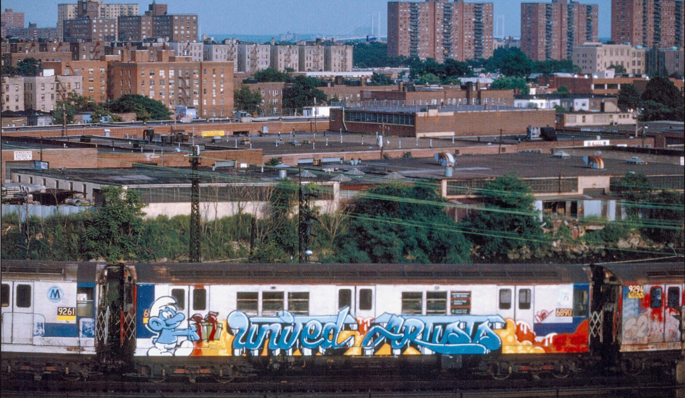

<html lang="es">
<head>
    <meta charset="UTF-8">
    <meta name="viewport" content="width=device-width, initial-scale=1.0">
    <title>SUBWAY ART</title>
    <link rel="preconnect" href="https://fonts.googleapis.com">
<link rel="preconnect" href="https://fonts.gstatic.com" crossorigin>
<link href="https://fonts.googleapis.com/css2?family=Arvo:ital,wght@0,400;0,700;1,400;1,700&display=swap" rel="stylesheet">
    <link href="https://cdn.jsdelivr.net/npm/normalize.css@8.0.1/normalize.min.css
" rel="stylesheet">
    <link rel="stylesheet" href="style.css">
</head>
</html>
<nav>
    
    <a href="index.html">Inicio</a>
    <a href="historia.html">Historia NY</a>
    <a href="intro.html">Introducción</a>
    <a href="fotos.html">Fotografía</a>
    <a href="wc.html">whole Cars</a>
    <a href="escritores.html">Escritores</a>
    <a href="personajes.html">personajes</a>
    <a href="spots.html">Spots</a>
    <a href="personajes.html">personajes</a>
    <a href="martha.html">Martha Cooper</a>
    <a href="henry.html">Henry Chalfant</a>
    
    </nav>

    <div id="main">
        <div class="container">
            <header>
                <h1>SUBWAY ART by <a href=https://en.wikipedia.org/wiki/Subway_Art>Martha Cooper and Henry Chalfant</a>.</h1>
                <p>Un recorrido visual por el graffiti del metro de Nueva York, capturado por Martha Cooper y Henry Chalfant en los años 80</p>
            </header>
            <section class="tiles">
                <article class="style1">
                    <span class="image">
                        
                    </span>
                    <a href="historia.html">
                        <h2>Historia New York</h2>
                        <div class="content">
                            <p>Como inició la cultura del graffiti en los años 80 en New York.</p>
                        </div>
                    </a>
                </article>
                <article class="style2">
                    <span class="image">
                        
                    </span>
                    <a href="intro.html">
                        <h2>Introducción</h2>
                        <div class="content">
                            <p>Impacto en la ciudad, y la importancia de la documentación visual de la historia.</p>
                        </div>
                    </a>
                </article>
                <article class="style3">
                    <span class="image">
                        
                    </span>
                    <a href="fotos.html">
                        <h2>Fotografías</h2>
                        <div class="content">
                            <p>Algunas de las fotografías más importantes que han trascendido con los años en la cultura urbana.</p>
                        </div>
                    </a>
                </article>
                <article class="style4">
                    <span class="image">
                        
                    </span>
                    <a href="escritores.html">
                        <h2>Escritores</h2>
                        <div class="content">
                            <p>Conoce a algunos de los nombres más reconocidos de la época.</p>
                        </div>
                    </a>
                </article>
                <article class="style5">
                    <span class="image">
                        
                    </span>
                    <a href="personajes.html">
                        <h2>Personajes</h2>
                        <div class="content">
                            <p>Recopilación de personajes en trenes, cada uno con distintos colores y estilos.</p>
                        </div>
                    </a>
                </article>
                <article class="style6">
                    <span class="image">
                        
                    </span>
                    <a href="wc.html">
                        <h2>Whole Cars</h2>
                        <div class="content">
                            <p>Vagones pintados por completo, aquí encontrarás algunos de los graffitis más grandes de la época.</p>
                        </div>
                    </a>
                </article>
                <article class="style2">
                    <span class="image">
                        
                    </span>
                    <a href="spots.html">
                        <h2>Spots</h2>
                        <div class="content">
                            <p>Conoce como eran los lugares donde los escritores entraban para poder pintar.</p>
                        </div>
                    </a>
                </article>
                <article class="style3">
                    <span class="image">
                        
                    </span>
                    <a href="martha.html">
                        <h2>Martha Cooper</h2>
                        <div class="content">
                            <p>Biografía de la fotógrafa Martha Cooper y su trayectoria dentro del mundo del graffiti.</p>
                        </div>
                    </a>
                </article>
                <article class="style1">
                    <span class="image">
                        
                    </span>
                    <a href="henry.html">
                        <h2>Henry Chalfant</h2>
                        <div class="content">
                            <p>Biografía del fotógrafo Henry Chalfant y su destacado trabajo por la cultura hip hop.</p>
                        </div>
                    </a>
                </article>
                
            </section>
        </div>
    </div>